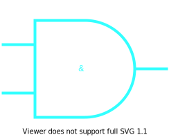
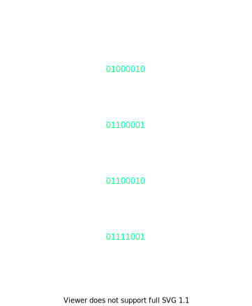
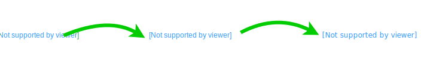
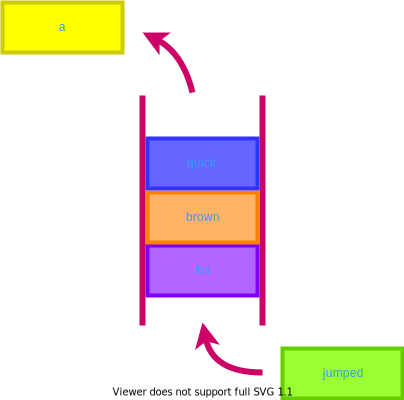
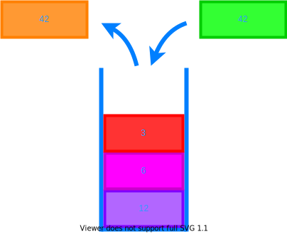

ABCs
of
Programming
A is for AND

AND in boolean logic means both inputs have to be true
In most programming languages AND is shown by using two ampersands like this: &&. The computer will check both sides to make sure they are true.
B is for Binary

Binary is made from 0's and 1's.
Binary is the language of computers. Computers read and write in binary. They even talk to each other in binary.
C is for Compiler

A compiler takes human readable code and turns it into something the computer can understand
Compilers usually have several steps. They will convert code to a special form that can be linked together before turning it into binary.
F is for Function

A function is a group of steps that change input into output.
Functions take some input and do a defined set of steps to change the input. Sometimes functions also do things like printing out text or getting input from you.
I is for Iterator
N is for Network

A network is a group of connected things.
The Internet is a network. It is a bunch of computers all connected and talking to one another.
O is for OR

OR in boolean logic means that only one input has to be true
In most programming languages OR is shown by using two pipe characters like this: ||. The computer will not check the right side if the left side is true.
Q is for Queue

A queue is a group of things that sit in a row.
With a queue, you can only add new things to the back and take things off the front. Queues help to keep things in order.
R is for Recursion

Recursion means that a function calls itself
Like a loop, recursion need to have a stop condition, otherwise the function will call itself forever! Or at least until the program crashes.
S is for Stack

A stack is a set of things that sit on top of each other.
With a stack, you can only add or remove things from the top. A stack can be used for things like undoing actions or reversing order.
T is for Tree

Trees start at a root node and link to other nodes
V is for Variable